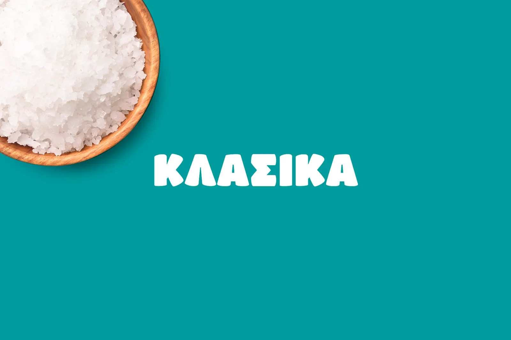
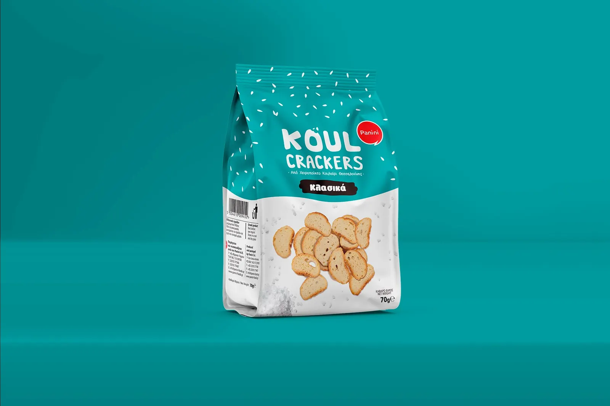
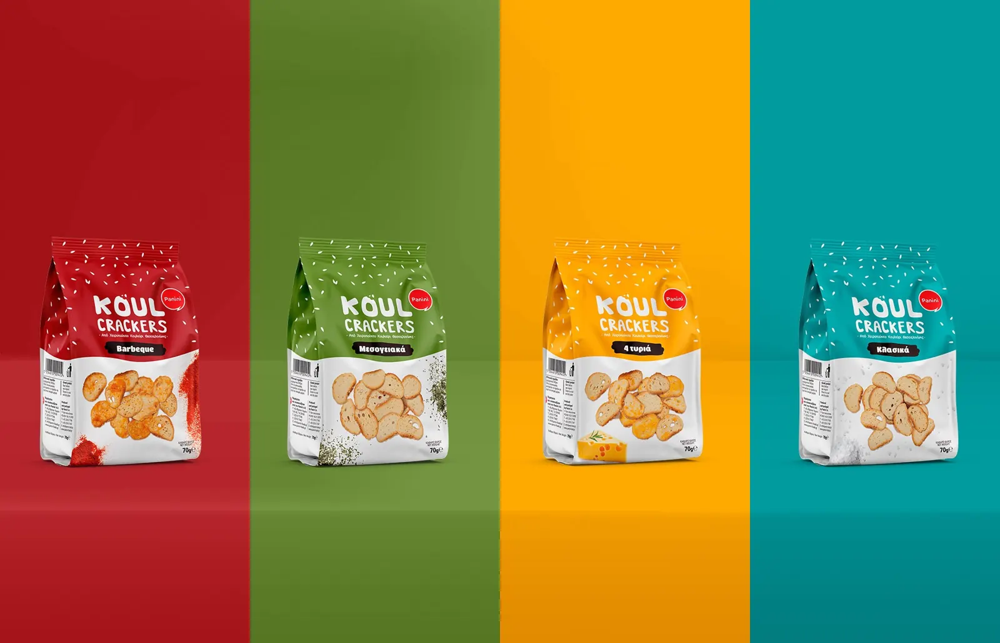
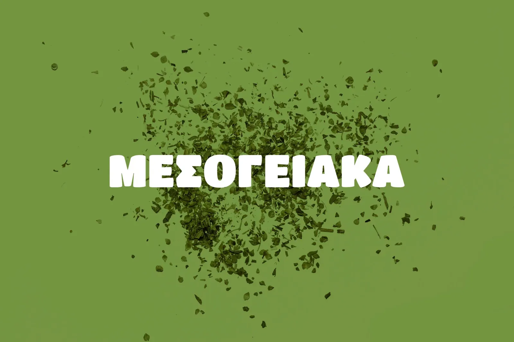
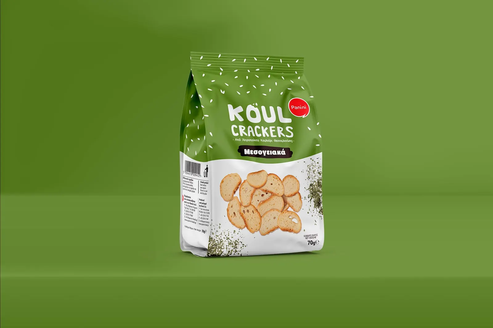
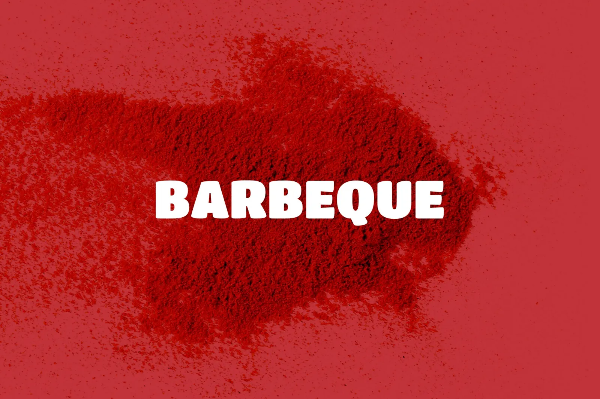
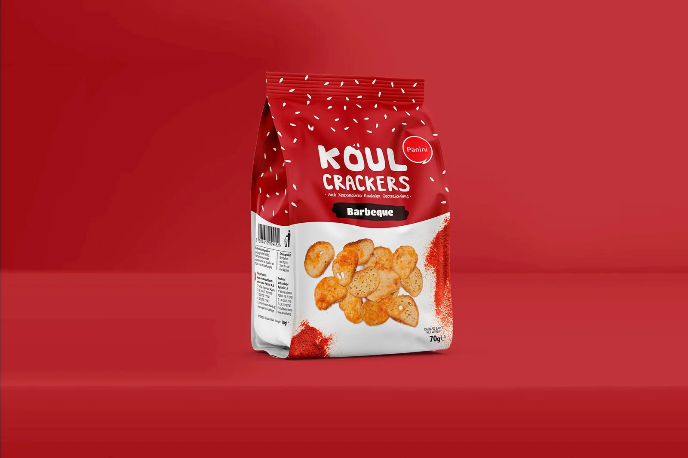
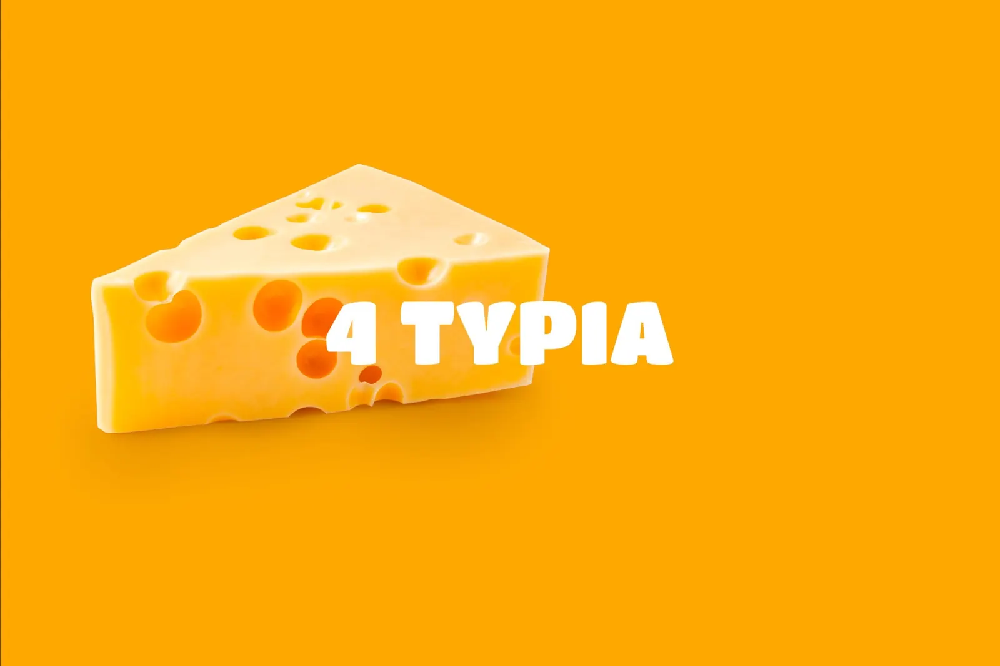
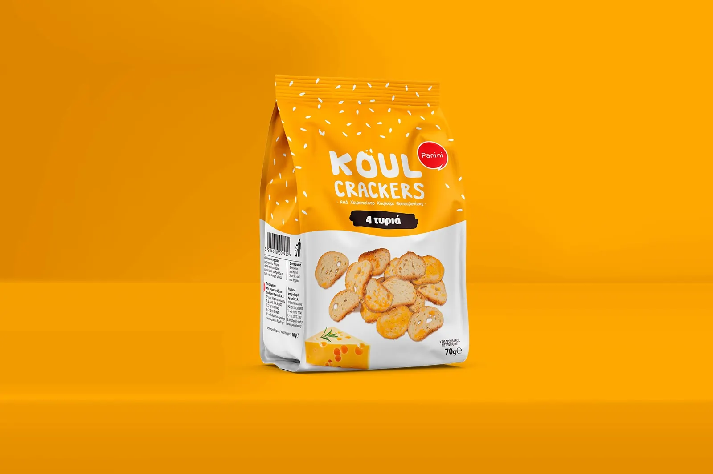
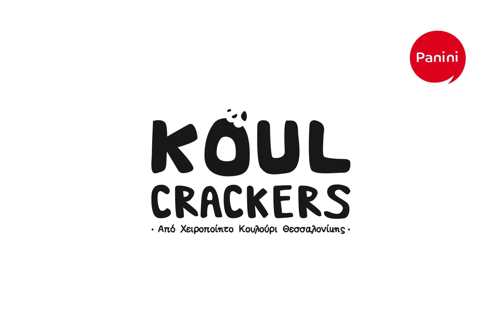

Flavour 1 of 4
Κλασικά
ClassicThe base of the range. A clean teal and a simple hero ingredient set the tone for every other flavour.


Crackers made from handmade Thessaloniki koulouri. One cracker, four moods. Each flavour gets its own colour and its own hero ingredient, so the range reads from across the aisle and every pack still belongs to the same family.

The base of the range. A clean teal and a simple hero ingredient set the tone for every other flavour.


Olive green and a burst of herbs. The herb dust is the hero, the pack keeps the same layout.


The loudest of the four. Deep red and a cloud of spice make it the easiest one to spot on the shelf.


Warm yellow and a wedge of cheese. It closes the range with the friendliest colour of the set.


We build the strategy, the identity and the packaging, then take it to fairs, shelves and screens.
